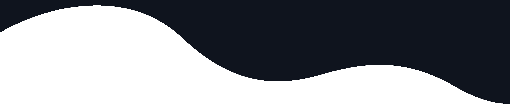

Werkervaring
NBArchitecten
Ik heb in de periode begin februari 2019, toen ik in de 4e klas zat, stage gelopen bij het architectenbureau NBArchitecten in Best. In de tijd die ik daar heb doorbracht, heb ik het architectenbureau nagemaakt in het tekenprogramma sketch.
Libéma
Ik heb in de periode eind februari 2019 stage gelopen bij het bedrijf Libéma in de Brabanthallen in 's-Hertogenbosch. Ik heb hier met veel plezier meegeholpen bij het opzetten van de Loversbeurs.
Opleidingen
DS. Pierson College - 2016 t/m 2020
Voor deze opleiding zat ik op het Ds. Pierson College in 's-Hertogenbosch en ik ben hier succesvol geslaagd met een VMBO-T diploma.
Koning Willen I College - 2020 t/m heden
Ik ben student op het Koning Willem I College, waar ik de opleiding Software Developer volg op de ICT-Academie. Ik zit nu in het eerste jaar van deze 4-jarige BOL-opleiding, waar ook ruimte is voor studenten die de opleiding in drie jaar willen afronden. Ik zet mezelf ook in om de opleiding in drie jaar af te kunnen ronden.
Hobby's en Kwaliteiten
Front-end Development
Ik maak graag websites met de talen HTML, CSS of (Discord bots) JavaScript. Dit doe ik zowel in mijn vrije tijd als voor een schoolproject.
Gamen
Naast coderen game ik ook graag in mijn vrije tijd, wanneer ik aan het gamen ben speel ik vaak schiet- of racespellen met vrienden.
Sporten
Ik ben lid van basketbalvereniging Den Dungk in mijn woonplaats Den Dungen. Eerder was ik ook lid bij een voetbalvereniging, maar dit heb ik op moeten geven omdat twee sporten te veel waren in combinatie met school.